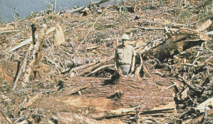
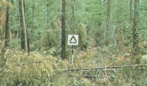

|
|
Fire Behavior Fuel Model 13 -- Heavy Logging Slash |
Anderson (1982) classifies Fire Behavior Fuel Model 13 in the Logging Slash Fuel Type and describes it as follows:
Fire is generally carried across the area by a continuous layer of slash. Large quantities of material larger than 3 inches (7.6 cm) are present. Fires spread quickly through the fine fuels and intensity builds up more slowly as the large fuels start burning. Active flaming is sustained for long periods and a wide variety of firebrands can be generated. These contribute to spotting problems as the weather conditions become more severe. Clearcuts and heavy partial-cuts in mature and overmature stands are depicted where the slash load is dominated by the greater than 3 inch (7.6 cm) diameter material. The total load may exceed 200 tons per acre (89.2 t/ha) but fuel less than 3 inches (7.6 cm) is generally only 10 percent of the total load. Situations where the slash still has "red" needles attached but the total load is lighter, more like model 12, can be represented because of the earlier high intensity and quicker area involvement.
Anderson's (1982) photographs 37 and 38 are examples of fuels fitting this model.
|  | Anderson (1982) Photo 37, Fire Behavior Fuel Model 13. West coast Douglas-fir clearcut, quality of cull is high. |
|  | Anderson (1982) Photo 38, Fire Behavior Fuel Model 13. High productivity of cedar-fir stand can result in large quantities of slash with high fire potential. |